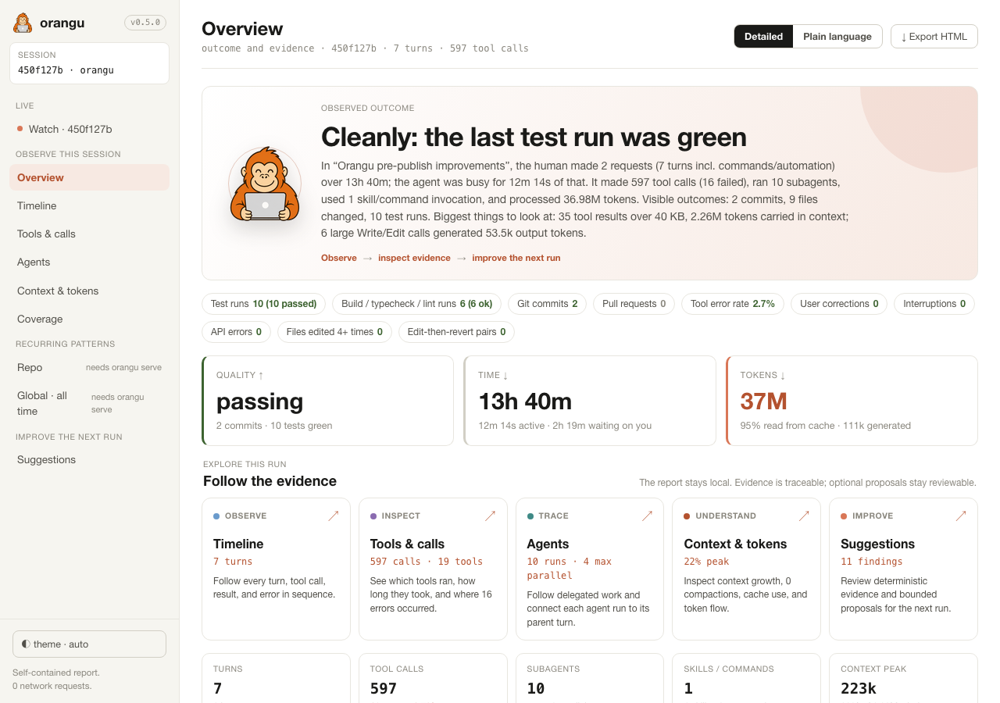

Orangu reads your local AI sessions so you don't have to guess what went right (or wrong).
Read-only. It reads the session files already on your disk and writes one HTML file. No proxy, no account, no telemetry.

You run coding agents for hours. Every tool call, retry, subagent, and re-read of the same file lands in a transcript on your disk: the only record of what happened, and unreadable at any useful speed. orangu reads it for you.
Plain code, no model. orangu parses, counts, reconciles, and ranks against 44 deterministic rules; no network, no clock. The same session gives the same answer every time. One report per run: the outcome, the timeline, every tool call and subagent, where the context filled up, where the tokens went.
The goal is not a score. It is better outcomes with less time and fewer tokens, and knowing which change moved which one. Nothing leaves your machine to find out.
| What the session tells you | What orangu shows |
|---|---|
| "compacted" | which turns filled the context window, and with what |
| a subagent's final answer | its full tree: tools, tokens, time, errors |
| that a skill is installed | whether it ever fired, and what it weighs in context |
| nothing about repetition | the same file read again and again, and the same context re-read on every request |
The Overview of a session from this repository, building orangu itself. A report is one HTML file that makes no network requests: keep it, open it anywhere, hand it to a teammate.
The published sample uses synthetic input, so nothing private ships.
Most tools stop at the chart. orangu carries a finding through to a change in your setup, with a receipt, so the next run can be checked against this one.
npx orangu report reads the run and ranks what it finds. No model is involved.
Open a finding. It shows the turns, the calls, and the numbers behind it.
/orangu:improve reads that evidence and drafts one proposal: a line in CLAUDE.md, a hook, a skill, a script. It never edits your project.
/orangu:apply applies the proposal you reviewed and records what changed and which checks ran.
How far a change may go. One run can be fixed and re-checked against a later session from the same workspace. Repo-wide changes are applied on request. Whole-harness changes stay review-only. A later comparison is evidence, not proof of cause.
Every report ships default-src 'none' and makes no request. orangu serve listens on 127.0.0.1.
Secrets are scrubbed and prompt text left out unless you ask. Add --strip-paths before you share.
No proxy, no hook, no SDK, nothing to install before the run. Your whole history is analyzable the minute orangu is, not just sessions started after it.
(This page loads Google Fonts; generated reports load nothing.)
Node.js 20 or newer. Zero runtime dependencies. The plugin is optional and comes second.
No install. Opens a report of your latest session.
/orangu:improve drafts, /orangu:apply applies, and three more skills read the same local evidence.
Read it, then decide whether the next one needs a change.